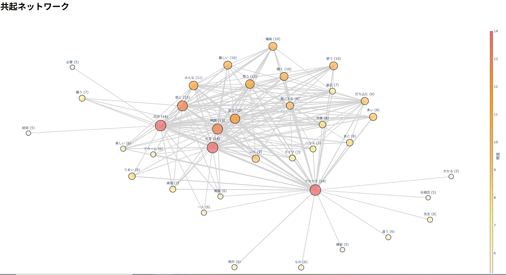

２０２５年５月９日
【やったこと】
1.インタビュー当日の流れ確認
2.インタビュー最終練習
【学んだこと・コツ・確認事項】
1.インタビュー当日の流れ確認
５月１０日(土曜日)
- 最初、１５～２０分全体に説明。(システム作成も可能であると伝える ex:HTML/Arduino/Python etc.)
減らしたい：日常のマイナス感情／増やしたい：日常のプラスの感情を聞き出す。
- インタビュー開始
- 模造紙に問題点とそこから考えられるアイデアを付箋に書いて貼り付け
- グループごとに発表
- 帰宅後、動画共有＋各自ダウンロード
- デジタルフィールドノート作成＋共起ネットワークの実行
- Slackで共有されたBoxにmp4・docx・csv・pngの４つのファイルを提出
※mp4 = 動画縮小版
※docx = wordテキスト起こし
※csv = デジタルフィールドノート作成後、時間軸を合わせて結合したもの
※png = 共起ネットワークの写真
『注意点』
- カメラ忘れずに！
- 撮影の許可を取り、自己紹介から始める。
- 次、何について話すか考え、会話を常に続けるようにする
- 無理矢理ではなく、現実的にできる提案をする。※AI任せは無し(アイデア出しの時)
- マスク持参
2.インタビュー最終練習
インタビュー当日の一連の流れを練習した。
- インタビュー３０分(撮影・word文字起こしあり)
- 動画共有＋各自ダウンロード
- 分担してデジタルフィールドノート作成＋共起ネットワークの実行
- Slackで共有されたBoxにmp4・docx・csv・pngの４つのファイルを提出

今まで、Pythonで共起ネットワークを起こしていたが、今回はwebアプリ版の共起ネットワークを初めて使用。
視覚情報として、とても見やすく分かりやすかった。特に、単語の頻出回数が視覚化できるのが良い。
さらに、ノードを大きくして重ねるのではなく、色で判断できるようにし、エッジは長く、広く取っている点が良い。
問題点は、単語結合が出来ず、出てきてほしい単語が別々に出力されたことである。(ex:ライブハウス⇒ライブとハウス)